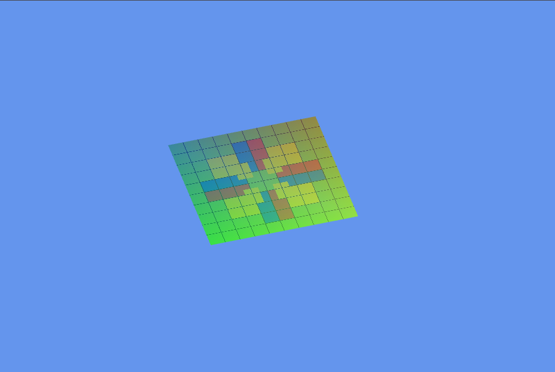

3D Graphics

This project is the first demo assignment for CS250 Computer Graphics II at DigiPen Institute of Technology. The goal was to build a working OpenGL rendering pipeline from scratch by implementing core graphics classes, writing GLSL shaders, and animating a textured quad on screen.
The project targets three platforms: Windows (native OpenGL 3.3), and Web (WebGL 2 via Emscripten), ensuring the code is compatible across all three environments. It also features a live asset reloading system, allowing shaders and textures to be swapped while the application is running.
glGenBuffers, glBindBuffer, glBufferData, and
glBufferSubData through the project's GL wrapper layer.GL_ELEMENT_ARRAY_BUFFER.glVertexAttribPointer, glEnableVertexAttribArray),
instancing divisor support, and both DrawElements and DrawArrays draw calls.glTexParameteri.paint_me.png with a
custom hand-drawn image.The hardest part of this assignment was creating the custom texture image. Since I am not an artist, I did not know what design I wanted to make. I had to experiment with different ideas before finally settling on something I was happy with.
Through this assignment, I got much more comfortable working with OpenGL. I learned how to implement core graphics classes like vertex buffers, index buffers, vertex arrays, and textures from scratch. I also learned how to write GLSL shaders and animate them using uniforms like time and mouse position. Additionally, I got exposure to building a project for the web using Emscripten, which was a completely new experience for me.